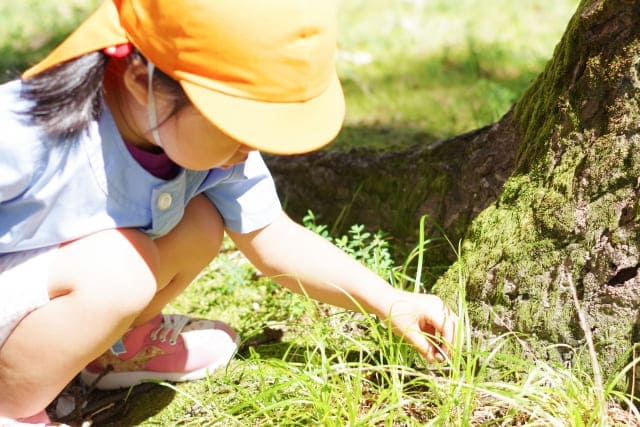
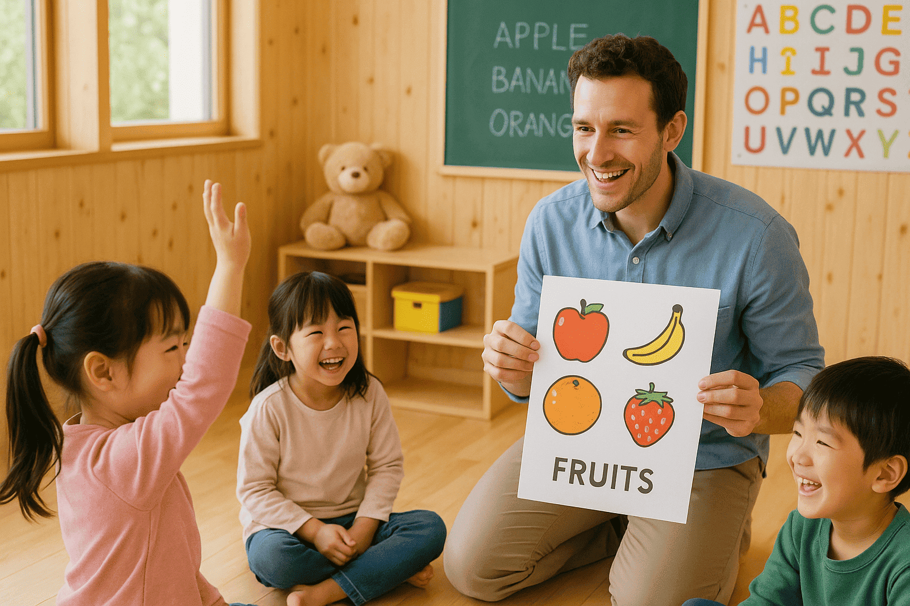
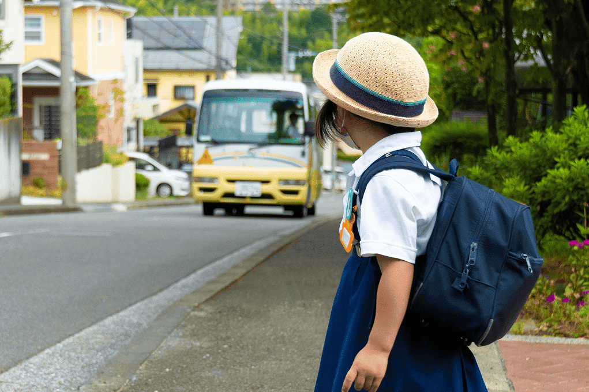
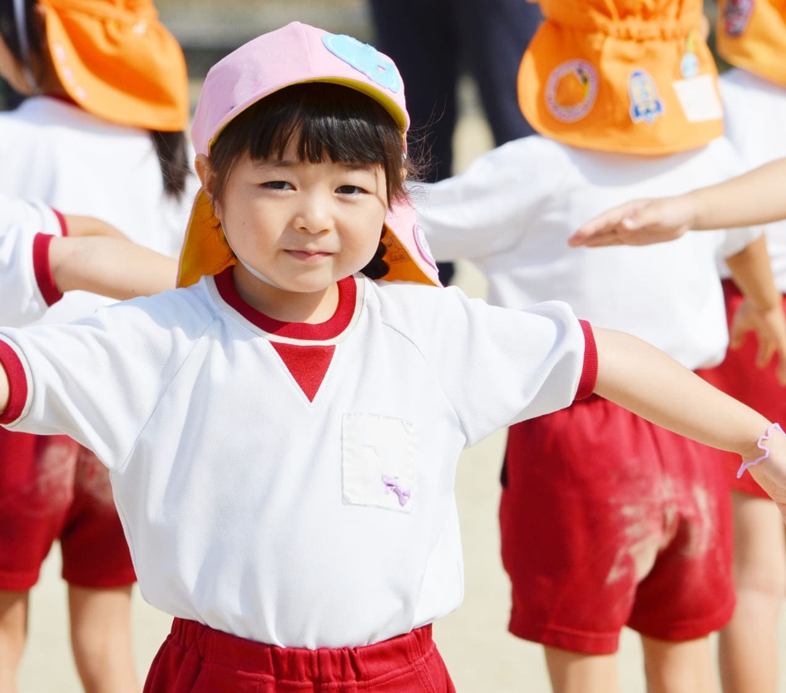
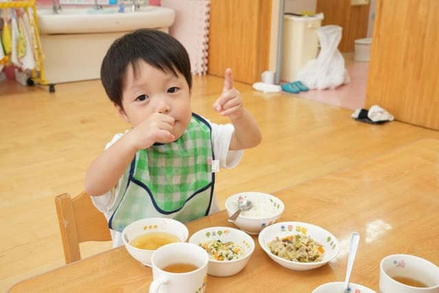

about 園について
feature 園の特色
-

01 自然との関わり
自然の中で思いきり遊ぶ時間を大切にしています
広々とした園庭や隣接する裏山は、子どもたちにとって最高の遊び場です。虫探し、草花遊び、木登り、泥んこ遊び、秘密基地作りなど、子どもたちの「やってみたい」という気持ちを大切にし、自由に探求する時間を十分に設けています。
四季折々の自然体験活動春は草花摘みや虫の観察、夏は水遊びやセミ採り、秋はどんぐり拾いや落ち葉遊び、冬は雪遊び（地域による）や冬芽の観察など、季節に応じた活動を積極的に取り入れています。 -
02 食育
1.育てて、つくって、食べて学ぶ
園の果物の木や畑で収穫・調理する体験を通し、子どもたちは命のつながりや食の大切さを五感で学びます。
2.食べることは、生きること
育てた野菜や果物、手作りの給食を味わいながら、五感で楽しむ食育を行っています。
3.食と仲よくなる毎日を
収穫やクッキング保育を通して、「感謝する心」や「食べる喜び」を育んでいます。

-

03 専門講師による豊かな学び
1.英語
ネイティブ講師との交流で、英語の音や異文化に親しみ、国際感覚を育みます。
2.体育
縄跳び、ボール遊びなどで基礎体力や運動能力を向上させ、体を動かす喜びを体験。友達と協力し、目標に向かって努力する中で、社会性やがんばる力を養います。
-
04 こころの土台を育てる
1.あいさつができる子に
毎日のあいさつを通して、人と関わる心を育てます。
2.はっきり返事ができる子に
相手を思いやる心と、素直な姿勢を身につけます。
3.くつをそろえられる子に
物を大切にし、場を整える習慣を育てます。
4.背すじをのばして「立腰」
良い姿勢が、心の落ち着きと集中力につながります。
slogan モットー
-
明るく元気な子
-
思いやりのある子
-
よく考え行動する子

daily 園での1日
-
7:30~
順次登園
笑顔いっぱいの「おはよう！」で一日が始まります。登園後は、自由に遊びながら一日をスタートします。
 -
9:45
登外遊び、朝のお集まり
広い園庭で体を動かしたり、自然の中で発見をしたり。その後は、みんなで集まり元気にご挨拶です。
 -
10:30
主活動
製作活動、絵画、リトミック、園外保育など、その日のテーマに合わせた活動で、創造力や協調性を育みます。

-
11:30
給食
みんなで食べる、おいしい手作り給食。旬の食材を使い、栄養バランスを考えたメニューです。
 -
12:30午後の活動
園庭で自由に遊んだり、室内で制作活動をしたりします。

おひるね（未満児）
未満児さんは午睡の時間で体を休めます。
-
14:00
順次降園
楽しかった一日を振り返り、ご家庭へ。
 おやつ・活動（未満児）、延長保育
おやつ・活動（未満児）、延長保育未満児さんはおやつを食べたり、引き続き遊びます。
延長保育のお子様は、引き続き室内で遊びながら保護者の方のお迎えを待ちます。
-
~18:30
year events 年間行事


春 spring
- 入園式
- 親子遠足
- 田植え
夏 summer
- 七夕
- プール遊び
- 年長お泊まり保育
秋 Autumn
- 運動会
- 芋ほり
- 保育参観
- バザー
冬 winter
- クリスマス会
- もちつき
- 発表会
- ひな祭り
- 卒園式
overview 園の概要
- 園名
- つむぎのもり幼稚園
- 所在地
- XX県XX市XX
- 設立
- 20XX年
- 対象年齢
- 0〜5歳
- 定員
- 各学年若干名
- 教職員数
- XX名
- 保育時間
- 8:30〜14:00 (延長保育あり)
- 休園日
- 土日祝・夏季・年末年始